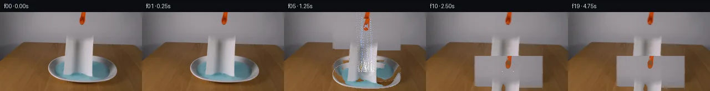

![首帧]()

Round 00
2026-11-06T03:01:30.446714+00:00像素候选变化代码 +426/−0inspection 更新
pixels bb76197a7cd4ec28 · code 67f7de6c2b86065d
查看本轮 generate.py 真实 diff
--- previous/generate.py
+++ current/generate.py
@@ -0,0 +1,426 @@
+"""PixelWorld-Text: Paper towel release animation.
+Generates 20 frames (256x144, 4fps) of a grabber releasing a paper towel
+into a dish of light blue liquid.
+"""
+import numpy as np
+from PIL import Image
+from pathlib import Path
+import sys
+
+# Import output helper
+from artifact_io import save
+
+CASE_DIR = Path('/mnt/bn/embodied-lf3/masiyuan/physics_iq_pixel_r2_full4fps/cleanroom_runs/deepseek-v4-pro/full_matrix_v1/text/case_0128_attempt_01/workspace')
+
+def main():
+ # Load first frame
+ first = np.array(Image.open(CASE_DIR / 'first_frame.png'))
+ H, W = first.shape[:2]
+ assert first.shape == (144, 256, 3) and first.dtype == np.uint8
+
+ # ---------------------------------------------------------------
+ # 1. SEGMENT THE PAPER TOWEL
+ # The towel is the white/off-white rectangular region at x=117-167, y=50-117.
+ # We use a brightness threshold to capture the full towel including shadowed parts.
+ # ---------------------------------------------------------------
+ # Brightness: how white is the pixel (max(r,g,b) vs min(r,g,b))
+ maxc = first.max(axis=2)
+ minc = first.min(axis=2)
+ # A pixel is part of the towel if it's relatively bright AND in the towel region
+ brightness = maxc.astype(np.float32)
+ saturation = (maxc.astype(np.float32) - minc.astype(np.float32)) / (maxc.astype(np.float32) + 1e-6)
+
+ # The towel is brighter than the gray background at the same y-level
+ # Background at same y but left of towel is ~RGB(80-140)
+ # Towel pixels are >150 in all channels typically
+
+ # Simple towel mask: pixels that are "towel-like" brightness in the towel region
+ towel_mask = np.zeros((H, W), dtype=bool)
+ # Use a per-row adaptive threshold: towel pixels are brighter than local background
+ for y in range(H):
+ row = first[y].astype(np.float32)
+ row_bright = row.max(axis=1)
+ # Background is roughly uniform gray at each row; towel is brighter
+ # Use a threshold based on the row's typical background
+ bg_estimate = np.median(row_bright[row_bright < 160]) if np.any(row_bright < 160) else 140
+ towel_mask[y] = (row_bright > bg_estimate + 20) & (row_bright > 140)
+
+ # Also include slightly darker towel edges - expand the mask
+ # The towel region is roughly x=117-167, y=50-117
+ towel_bbox_ys, towel_bbox_xs = np.where(towel_mask)
+ if len(towel_bbox_ys) > 0:
+ towel_y_min = towel_bbox_ys.min()
+ towel_y_max = towel_bbox_ys.max()
+ towel_x_min = towel_bbox_xs.min()
+ towel_x_max = towel_bbox_xs.max()
+ print(f"Towel bbox: x=[{towel_x_min},{towel_x_max}], y=[{towel_y_min},{towel_y_max}]")
+ else:
+ print("WARNING: No towel pixels found!")
+ towel_y_min, towel_y_max, towel_x_min, towel_x_max = 50, 117, 117, 167
+
+ # Expand towel mask to include darker edge pixels within the bounding box
+ expanded_mask = np.zeros((H, W), dtype=bool)
+ for y in range(towel_y_min, towel_y_max + 1):
+ for x in range(towel_x_min - 3, min(towel_x_max + 3, W)):
+ r, g, b = first[y, x].astype(int)
+ if (r > 110 and g > 100 and b > 90 and
+ max(r, g, b) - min(r, g, b) < 40 and
+ (r + g + b) / 3 > 120):
+ expanded_mask[y, x] = True
+
+ # Also include any pixel that was in the original towel_mask
+ expanded_mask |= towel_mask
+
+ # Restrict to the towel region
+ full_towel_mask = np.zeros((H, W), dtype=bool)
+ for y in range(max(0, towel_y_min - 1), min(H, towel_y_max + 5)):
+ for x in range(max(0, towel_x_min - 5), min(W, towel_x_max + 5)):
+ if expanded_mask[y, x]:
+ full_towel_mask[y, x] = True
+
+ # Also include the grabber's gripper tips (the thin dark/gray elements
+ # that hold the towel at its left edge x=115-120, y=65-85)
+ gripper_mask = np.zeros((H, W), dtype=bool)
+ for y in range(60, 90):
+ for x in range(112, 122):
+ r, g, b = first[y, x].astype(int)
+ # Gripper tip: darker gray elements against the towel
… diff truncated; 339 more lines …